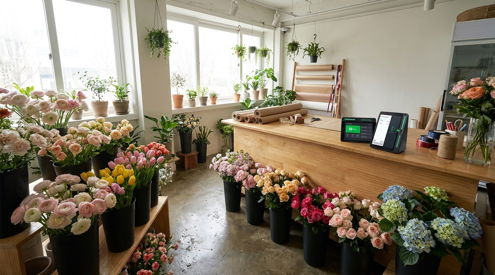
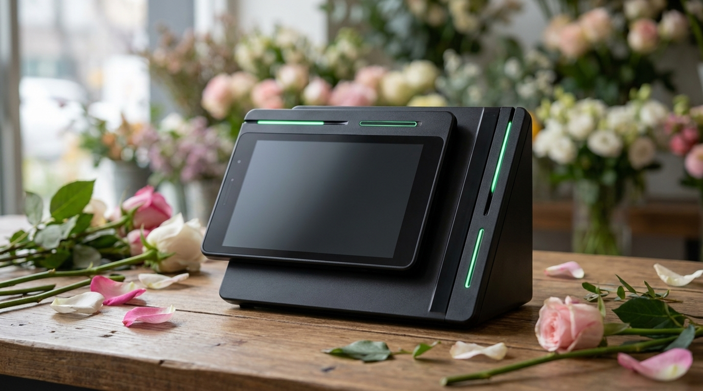

가게 오픈 날짜가 정해졌다면 결제기 신청은 언제 해야 할까요
꽃집처럼 시즌이 뚜렷한 업종은 문 여는 시기를 놓치면 그해 장사의 큰 부분을 놓칩니다. 그런데 오픈 준비 목록에서 결제기는 대개 가장 마지막으로 밀립니다. 저희가 수도권 신규 매장을 직접 방문해 설치하면서 가장 자주 듣는 말도 "이렇게 미리 해야 하는 줄 몰랐다"입니다. 결제기는 사서 놓으면 되는 물건이 아니라 가맹점 등록 심사가 함께 진행되는 절차여서, 신청 시점이 곧 개통 시점을 결정합니다. 이 글에서는 오픈 날짜에서 거꾸로 계산하는 방법을 정리했습니다.

기기가 도착하는 날과 결제가 되는 날은 다릅니다
가장 흔한 오해입니다. 기기를 받으면 바로 쓸 수 있다고 생각하시는데, 실제로는 카드사와 연결되는 가맹점 등록이 완료되어야 승인이 납니다. 기기가 매장에 있어도 이 절차가 끝나지 않으면 손님 카드는 승인되지 않습니다.
그래서 일정을 잡을 때 기준으로 삼아야 하는 것은 배송일이 아니라 개통일입니다. 개통일은 서류가 언제 제출되었는지, 그 서류가 한 번에 맞았는지에 따라 달라집니다. 여기서 시간이 벌어집니다.
실제로 늦어지는 사례는 대부분 서류에서 나옵니다. 사업자등록이 아직 안 된 경우, 상호나 주소가 실제 매장과 다른 경우, 통장 명의가 대표자와 다른 경우입니다. 이런 경우 보완 요청이 오고, 다시 제출하고, 다시 확인하는 사이에 며칠이 지나갑니다. 한 번에 맞추면 그만큼 앞당겨집니다.
시즌 장사를 하는 매장은 여유를 더 두셔야 합니다
꽃집은 특정 시기에 매출이 몰립니다. 졸업과 입학, 각종 기념일 주간이 그렇습니다. 그 주간에 결제기가 준비되지 않으면 일 년 중 가장 중요한 며칠을 그냥 보내게 됩니다.

그래서 시즌 매장은 오픈 날짜가 아니라 첫 성수기 앞에 여유를 두고 일정을 잡으시는 편이 안전합니다. 오픈이 성수기 직전이라면 특히 그렇습니다. 인테리어가 늦어지고 인터넷 개통이 밀리는 일은 흔한데, 그때마다 결제기 일정도 같이 밀리기 때문입니다.
인터넷 개통일은 꼭 함께 알려 주시길 권합니다. 결제기는 통신망을 쓰기 때문에, 인터넷이 아직 들어오지 않은 매장은 설치 방문을 해도 개통 확인까지 마치기 어렵습니다. 이 하나가 어긋나면 방문을 두 번 하게 됩니다.
오픈 날짜에서 거꾸로 짚어 보기
| 기준 시점 | 이 시점에 할 일 |
|---|---|
| 사업자등록 직후 | 상담으로 매장 구성 결정, 필요한 서류 목록 확인 |
| 인테리어 착수 무렵 | 가맹점 등록 신청, 서류 제출 |
| 인터넷 개통 예정일 확정 | 설치 방문 일정 예약 |
| 오픈 전 주 | 방문 설치·개통, 승인·취소 실제 테스트 |
| 오픈 당일 | 영수증 용지 여유분 확인, 결제 한 번 점검 |
| 첫 성수기 전 | 대기 발생 여부 확인, 필요 시 구성 보완 |
이 표는 저희가 신규 매장 상담에서 실제로 쓰는 순서입니다. 사장님이 알려 주셔야 하는 것은 오픈 날짜와 인터넷 개통 예정일 두 가지뿐이고, 나머지는 저희가 거꾸로 채워 드립니다.
꽃집은 결제 자리가 좁습니다
실무적인 이야기를 하나 더 드리면, 꽃집은 계산대가 좁고 물이 가까이 있는 경우가 많습니다. 포장 작업을 하는 자리와 결제하는 자리가 겹치면 젖은 손으로 기기를 만지게 되고, 줄기와 잎이 떨어져 쌓입니다.
그래서 설치 방문 때 자리를 함께 정하시길 권합니다. 포장대와 결제 자리를 조금만 나눠 두면 관리가 훨씬 쉬워지고, 손님이 기다리는 동선도 정리됩니다. 저희는 수도권 매장은 직접 방문하기 때문에 이런 자리 조정을 그 자리에서 함께 봅니다.
콘센트 위치도 미리 확인해 두시면 좋습니다. 나중에 자리를 옮기려면 배선을 다시 손봐야 하는데, 꽃집처럼 진열이 촘촘한 매장은 그 작업이 생각보다 번거롭습니다.
오픈 준비에서 결제기가 마지막으로 밀리는 이유
상담을 드리다 보면 결제기를 늦게 알아보시는 데에는 대체로 같은 이유가 있었습니다. 눈에 보이는 준비가 아니기 때문입니다. 인테리어는 매일 달라지는 것이 보이고, 간판은 걸리면 티가 나고, 물건은 쌓이는 것이 보입니다. 결제기는 마지막에 놓이는 작은 기기 하나라 우선순위에서 자연히 뒤로 갑니다.
그런데 오픈 당일에 작동하지 않으면 가장 크게 티가 나는 것도 결제기입니다. 손님은 물건을 골라 계산대까지 왔는데 결제가 되지 않으면 그냥 나갑니다. 첫날 그런 일이 생기면 사장님 마음에도 오래 남습니다.
그래서 저희는 상담 순서를 바꿔 드립니다. 인테리어 일정이 확정되기 전에도 결제기 상담은 가능하고, 서류 준비도 미리 시작할 수 있습니다. 먼저 시작해서 손해 볼 것이 없는 항목이기 때문입니다.
특히 꽃집처럼 소규모로 시작하시는 매장은 사장님 혼자 모든 준비를 하시는 경우가 많습니다. 오픈이 가까워질수록 하루가 정신없어지고 전화 받을 시간도 줄어듭니다. 그 시기에 서류 보완 연락이 오면 며칠이 그냥 지나갑니다. 미리 해 두시면 그 시기를 조용히 넘길 수 있습니다.
자주 묻는 질문
Q. 사업자등록증이 아직 안 나왔는데 상담부터 해도 되나요?
됩니다. 매장 구성과 일정 상담은 사업자등록 전에도 가능합니다. 가맹점 등록 신청만 사업자등록증이 나온 뒤에 진행되므로, 그 기간을 감안해 일정을 잡아 드립니다.
Q. 오픈이 급한데 얼마나 빨리 될까요?
서류가 한 번에 맞으면 상당히 앞당겨집니다. 다만 심사 기간은 저희가 임의로 조정할 수 있는 부분이 아니어서, 정확한 일정은 매장 상황을 확인한 뒤 안내해 드립니다.
Q. 임시로 먼저 쓰고 나중에 정식으로 바꿀 수 있나요?
가맹점 등록은 사업자 기준으로 이루어지므로 임시 사용이라는 형태는 권해 드리지 않습니다. 오픈 일정을 알려 주시면 그에 맞춰 정식으로 준비해 드리는 편이 안전합니다.
Q. 비용은 어떻게 되나요?
매장 구성과 필요한 기기에 따라 달라져 상담 시 직접 공급가로 안내해 드립니다. 네이버단말기는 약정 없이 이용하실 수 있습니다.
날짜 두 개만 알려 주시면 나머지는 저희가 맞춥니다
오픈 준비는 챙길 것이 많아 결제기까지 신경 쓰기 어렵습니다. 그래서 저희는 사장님께 두 가지만 여쭙습니다. 문 여는 날짜와 인터넷 개통 예정일. 이 두 날짜가 나오면 언제 서류를 준비하고 언제 방문할지 저희가 역산해 잡아 드립니다. 정품 신제품 보증에 수도권은 직접 방문해 설치하고 관리해 드리니, 오픈 일정이 정해지셨다면 편하게 연락 주세요.
- 📞 전화상담 1544-7754
- 🌐 홈페이지 https://nwpos.co.kr

📷 인스타그램 팔로우 https://www.instagram.com/nurinetworkspos

▶️ 유튜브 구독 https://www.youtube.com/@nurinetworks